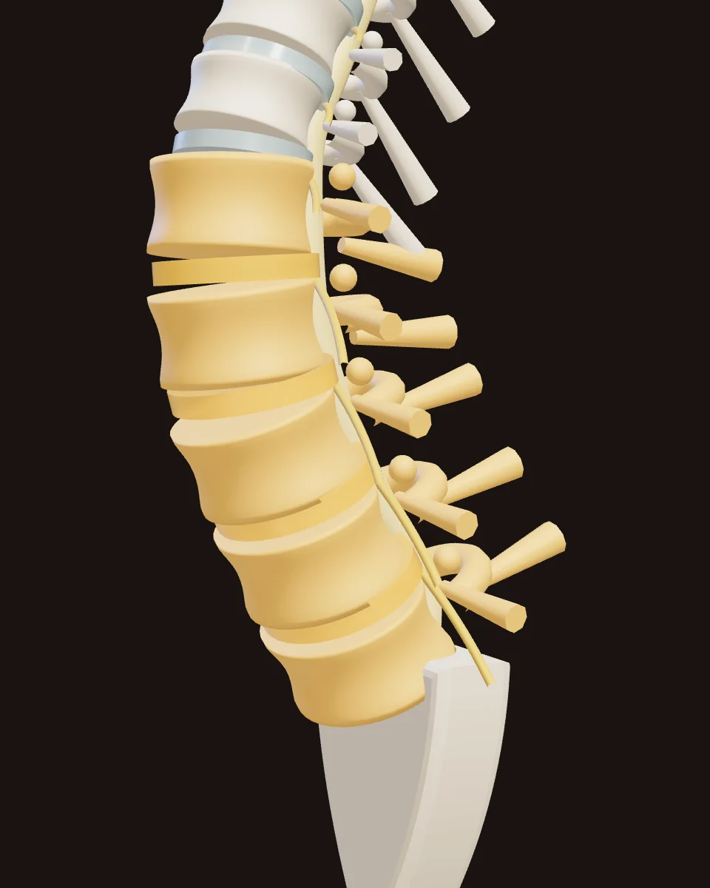

Bel bölgesi
Osteopatik manuel terapi
Omurga ile kol ve bacak eklemlerindeki ağrı, işlev kaybı ve hareket kısıtlılıklarında kullanılan, elle uygulanan teknikler.
- Nasıl uygulanır
- Eklem mobilizasyonu, yumuşak doku ve germe teknikleri; her zaman bir egzersiz programıyla birlikte.
- Kimler için
- Hekimin uygun gördüğü bel ve boyun fıtığıyla ilişkili ağrılar, omuz ve diz ağrıları, kas spazmları.
- Bilmeniz gereken
- Önce bilgilendirilmiş onamınız alınır. Kırık şüphesi ya da ilerleyen güç kaybı gibi durumlarda uygulama yapılmaz.